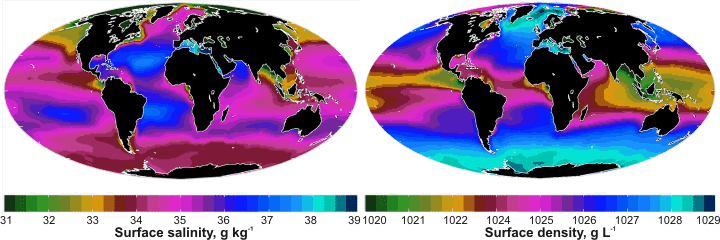
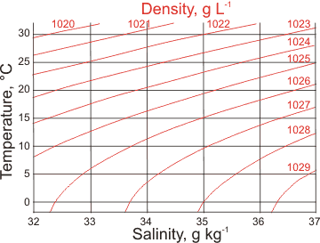

Earth: the blue seawater planet
Water covers about 71% of the Earth's surface.
 Hard water, descaling, and desalination
Hard water, descaling, and desalination
Water, water, every where,
Nor any drop to drink.
Coleridge, 1798
Most of Earth's water was present by ≈ 3.8 ˣ 109 years ago (3.8 Ga). Seawater is water from the oceans and linked seas on Earth. Over time, water has reacted with the elements resulting in the minerals that make up the Earth's surface and the oceans' solutes [2270]. Rainwater has washed mineral ions into the sea, where some are used (temporarily) by marine animals and plants. There were compositional differences from today's oceans in ancient oceans (with higher H3O+ and much higher CO2, but much lower O2 [4263]), although little or no change has occurred over historical time [4256]. Most of the free water on Earth today is seawater (saltwater, ~1.4 ˣ109 km3 ), an about 3.5 % electrolyte solution by weight (96.5 % H2O) that has a somewhat similar composition (if not total concentration) all over the planet. Surface waters also contain 40 - 60 μM of more variable dissolved organic matter that is not included in 'standard' solutions. Its density [3769], thermo-physical properties [2549], and light absorption [3435], have been described in a comparison of seawater with pure water [3663]. Natural seawater salinity and density vary slightly both in geographical position and with depth [4267]. It changes due to currents and mixing of water from different depths and densities, by rainfall and evaporation at the surface, by the freezing and melting of sea ice, by the freshwater discharged from rivers and glaciers, and indirectly due to local and non-local weather. Seawater has slightly greater viscosity (about +8%) and surface tension (about +1.5%) than pure water. Freshwater tends to float, and cold seawater tends to sink. The most saline ocean-linked sea is the Red Sea, where there is a high evaporation rate, and there is little fresh water coming from local rivers. The significant variations in salinity depend on the balance between evaporation and precipitation and the extent of mixing between the surface and deeper waters (see Figure below). The densest (e.g., coldest or most saline) waters tend to sink to the bottom. The least saline seas occur at the mouths of the major rivers (e.g., the Amazon) and bordering melting ice shelves. The chemical composition of seawater varies a little from place to place and consists of a mixture of most of the elements in the periodic table. A 'standard' seawater has been defined to unambiguously describe its thermodynamic properties [1452], avoiding these slight variations, with the small corrections for local differences being later introduced. This 'standard' seawater is based on the major mineral components of surface seawater samples taken from the North Atlantic (without organic nutrients), with other oceanic seawaters showing similar compositions.
Earth: Surface salinity and density; mouse over for ocean currents and surface temperature

| There is a complex relationship between salinity, density, temperature, buoyancy, currents, and physical geography. Surface salinity depends on the rainfall, ice formation, and evaporation rates and the density of the underlying water. The surface density is determined by the surface temperature and the surface salinity. Surface temperature (mouse over the diagram) is governed by the latitude and surface currents. The rotation of the Earth, physical geography, seafloor topography, and differences in seawater buoyancy all drive the currents. |
Residence times for 'Standard' seawater salts,
from [4436]
The number of water molecules in the hydration shells and
their residence times are, Mg2+, 6.00, 140 ns; Ca2+, 7.45, 116 ps;
Na+, 5.53, 18.6 ps; K+, 6.70, 6.7 ps; Cl-, 5.86, 8.2 ps; and SO42-,
12.4, 9.9 ps, [4436]
The 'Absolute Salinity' of seawater is defined as the mass fraction of dissolved material. The standardized preparation of this IAPSO 'Standard' seawater has been described. g There is a 2018 review of the assessment of the absolute salinity of seawater [4218]. The Absolute Salinity [2474] of this IAPSO 'Standard' seawater is 35.16504 g ˣ kg−1 exactly (1.16 molal ions; pH = 8.1; ionic strength 0.67 M; average molecular weight 31.4038 g ˣ mol−1, density 1.02346 g ˣ L−1; triple point 271.24 K, 521.56 Pa; melting point -1.91 °C; boiling point 100.56 °C; critical point 29.8 MPa, 680 K; osmotic pressure 2.576 MPa, surface tension 0.0728 N ˣ m−1 at 25 °C; but see also [3599] ); containing many ionic species, Na+ 10.78145 g ˣ kg−1, Mg2+ 1.28372 g ˣ kg−1, Ca2+ 0.41208 g ˣ kg−1, K+ 0.39910 g ˣ kg−1, Sr2+ 0.00795 g ˣ kg−1, Cl− 19.35271 g ˣ kg−1, SO42− 2.71235 g ˣ kg−1, HCO3− 0.10481 g ˣ kg−1, Br− 0.06728 g ˣ kg−1, CO32− 0.01434 g ˣ kg−1, B(OH)4− 0.00795 g ˣ kg−1, F − 0.00130 g ˣ kg−1, OH− 0.00014 g ˣ kg−1, B(OH)3 0.01944 g ˣ kg−1, and CO2 0.00042 g ˣ kg−1; all plus plus H2O 964.83496 g ˣ kg−1 [1452]. The hardness of IAPSO 'Standard' seawater is calculated as Ca2+ (in mg ˣ L−1 × 2.497) + Mg2+ (in mg ˣ L−1 × 4.118) + Sr2+ (in mg ˣ L−1 × 1.142) = 6473 and is mostly (83.6%) due to its Mg2+ content. The charge balance in seawater is,
[H+] + [Na+] + [K+] + [MgOH+] + 2 ˣ [Mg2+] + 2 ˣ [Ca2+] + 2 ˣ [Sr2+] + [NH4+] + 2 ˣ [Fe2+] =
[HCO3−] + 2 ˣ [CO32−] + [HSO4−] + 2 ˣ [SO4−] + [Cl−] + [OH−] + [Br−] + [B(OH)4−] + [F−] + [HS−]
Seawater also contains traces of other materials such as nitrous oxide with typical concentrations of 0.2 - 20 µg ˣ kg−1. Significant amounts of uranium (~3.3 ppb) are found with many methods explored for its extraction [4441]. Trace heavy metals are complexed with dissolved organics (1 - 2 ppm) and living organisms (e.g., Fe). Silicates are also present in small but variable amounts (~4 ppm). About 6% of the water molecules are held in the solvation shells of the salt molecules [4421]. Ninety-one elements have been analyzed in seawater [4444]. Seawater desalination concentrate is a likely source for elemental separation [4445]. Just a small amount of water's hydrogen bonding (~2 %) is broken under the increased pressure of the oceans at 4000 m.The pKw of standard seawater is 13.76 [4245], and its water activity (aw, 25 °C) is 0.9813. Its vapor pressure is slightly lower (~-2%) than pure water due to the dissolved salts. The chemical composition of sea salt is very similar in all oceans and varies negligibly over time.
This salinity is just over one molal salt ion and almost four times the salt concentration in our blood, meaning that it cannot be used as the sole source of water for drinking, as we cannot get rid of that concentration of salt once ingested. Atmospheric gas dissolves naturally in seawater, typically about 7, 13 and 0.3 ml STP liter−1 (20 °C) for O2, N2, and Ar respectively at 10 m depth and about 5, 14, and 0.4 ml STP liter−1 (20 °C) for O2, N2, and Ar respectively at 5000 m depth [2897]. The surface tension of seawater has been measured across a salinity range of 20 - 131 g ˣ kg−1 and the temperature range of 1 - 92 °C at atmospheric pressure [3925]. It increases with salt content (Practical Salinity, SP, 0 - 40) but reduces with temperature (T, 0 - 30 °C), using the empirical equation [4258],
γ(T, S) = 75.64 + 0.144 ˣ T + 0.0221 ˣ SP (N ˣ m−1)
There is a significant effect of the salts, such as Ca2+, with the water's hardness being over 20 times that of freshwater, which is clear from the difficulty of washing clothes in seawater. The pKw of surface seawater is about 14.005 at 25 °C, and its redox potential is about +400 mV [3041]. Other salt waters may have greater osmotic pressures, such as the Great Salt Lake (≈ 24% salt, 37.5 MPa) and the Dead Sea (≈ 33% salt, 50.7 MPa).
Seawater density and salinity

The surface of seawater begins to freeze at −1.91 °C with the ice excluding the salt.a This ice floats on the surface. The salt that is "frozen out" adds to the salinity of the remaining liquid seawater just below it. This salt makes the surface water denser,and causes it to sink towards the bottom, carrying the dissolved oxygen. This movement, together with changes in salinity and temperature (both changing density, see left) has a significant influence on ocean currents and behavior. For example, high-density water in the North Atlantic sinks, carrying oxygenated water to great depth, flowing back towards the equator. It remains cold and dense deep under the equatorial oceans, rising in Antarctica.
The temperature of maximum density decreases with increasing salt concentration (see below; 'psu' are units on the Practical Salinity Scale b) until the water freezes at about -1.3 °C at a density of about 1015 kg ˣ m−3.
There has been concern over the acidification of the oceans and the consequential loss of dissolved carbonate. This acidification has been clear from before the industrial revolution to the present (see below for 1751-1994) and is caused by higher and rising atmospheric CO2 [2221].
The maximum density of saltwater
The upper parts of the oceans are mostly supersaturated in calcium carbonate. This is of crucial importance for the foraminifera protozoans as they possess CaCO3 coats that would otherwise dissolve. Only 9% of seawater CO32− is free of complexation/ion-pairing. (see calcium carbonate equilibria).
Surface pH; mouse over for surface CO32−
 between the pre-industrial period and the present day from the Global Ocean Data Analysis Project")
Ocean acidification, from [2222]
If this continues, further carbon dioxide dissolution will help its use as a buffer, lower the pH [2474], and alter seawater's carbonate chemistry and reduce marine calcifying organisms and the stability of the shells of sea animals.
CO2 (g) + H2O  CO2 (aq)
CO2 (aq)
CO2 (aq) + H2O  H2CO3
H2CO3
H2CO3 + H2O  H3O+ + HCO3−
H3O+ + HCO3−
HCO3− + H2O  H3O+ + CO32−
H3O+ + CO32−
CO2(aq) + CaCO3 (solid) + H2O  Ca2+(dissolved) + 2 HCO3−
Ca2+(dissolved) + 2 HCO3−
HCO3−(aq) + H2O H3O+ + CO32−(aq)
H3O+ + CO32−(aq)
The relationship between atmospheric CO2, global warming, and ocean acidification [2222] (see right) is complicated with feedback and feed-forward controls. Different modeling approaches give rise to different potential outcomes. The gas exchange between the air and the sea depends mainly on the wind speed and enhanced by sea spray [4484]. Seven thousand years ago, the CO2 level was half what it is today. For example, carbonate minerals partially neutralize the acidity resulting from dissolved carbon dioxide, and the pH depends upon the oceanic mixing times. The possible error in the global warming response to any CO2 rise is of the same order as the CO2 rise itself [3167]. We hope that we may yet be able to avoid global warming exceeding 2 K. However, likely continued increases in CO2 and the related warming of the oceans will have substantial adverse effects on marine ecosystems over the next fifty or so years [2352]. The prominent rise in atmospheric CO2 is down to China and developing countries with the EU's contribution dropping slightly. Deforestation, farming, and urbanization all increase the CO2 output. The lifetime of CO2 in the atmosphere is about ten years, with about fifty times more CO2 in the oceans, with a lifetime of hundreds of years.
Breaking water waves produce whitecaps in the open sea containing bubble clouds up to about 5 m below the surface and floating foam layers. The volume of air trapped depends on the wind speed (e.g., about one ppm by volume with winds of about 10 m ˣ s−1 at 0.3 m depth [4264]). Where there are fewer bubbles, the sea turns from white to a bright bluish-green. These bubbles are of smaller size and last much longer (up to several minutes) than in freshwater [4259], showing a range of sizes (~0.1 mm - >0.5 mm, comparable with bubbles created by capillaries) and enhancing the transfer processes across the air-sea interface. Although inorganic salts should act as anti-foaming agents in clean aqueous solutions by raising the surface tension, this anti-foaming role of the salts reverses in the presence of organics and surfactants [4258]. Importantly, it should also be noted that many salts anomalously prevent the coalescence of small bubbles [672]. When the bubbles burst, they transfer solid, liquid, and gaseous material into the air, where particles persist [4260]. Seafoam (spume) is a different phenomenon that may form at the coast due to the churning of decaying algal and other organic matter that causes reduced surface tension [4265]. Although generally harmless, such foam can produce harmful aerosols and reduce the waterproofing of seabirds.
The salt composition causes seawater to behave like pure pressurized water, and so many of the water anomalies are reduced or lost [2179] in seawater, particularly at higher salinity. For example, no maximum density is apparent as the temperature is lowered towards its freezing point. An interesting anomaly of seawater is its tendency to retard the coalescence of bubbles to form foams depending on the nature and concentration of its solutes (see further explanation).
Seawater has some industrial uses, such as in cooling power plants and converting into drinking water. The most concentrated metals (Na, Mg, Ca, and K) in sea salt are commercially extracted, mostly as their chlorides. Other, more valuable, elements (e.g., Ag (~ 0.1 nM), Au (~ 0.1 pM), Hg (~ 0.01 nM), Pt (~ 1 pM)) cannot be economically recovered [4256]. Surface seawater is supersaturated with calcium carbonates and these precipitate on evaporation or freezing [4266]. The lower concentrations in deeper water encourage the solubilization of calcium carbonates. On progressive evaporation of surface water, the salts are precipitated in the order: first, calcium carbonate (calcite and ikaite, CaCO3.6H2O), then calcium sulfate (gypsum then anhydrite that both limit the seawater solubility of Ca2+), then sodium chloride (halite), and finally the remaining mixed sulfates and chlorides of Mg2+ and K+ (such as carnallite and langbeinite).
[Back to Top  ]
]
a Sea-ice consists of pure water ice plus air pockets and very salty liquid water inclusions that gradually drain away with time. The rejected brine phase is liquid until the temperatures drop to around −21.1 °C. A tiny number of ions can be accommodated in the solid ice lattice, with Cl− ions much more easily incorporated than Na+ ions [4346]. Cl− substitutes for two water molecules in the lattice without distortion, but Na+ ions distort the lattice. Sea-ice differs from glacial ice, which does not contain any saltwater inclusions. There is a thermodynamic formulation for sea ice [4285]. [Back]
b The Practical Salinity Scale. A complete chemical analysis of seawater is too time-consuming for routine use. The Practical Salinity Scale of 1978 has been developed so that routine salinity determination may be made to compare between different studies [2484]; it is not an SI unit. The Practical Salinity Scale (SP) defines salinity in terms of the conductivity ratio of a sample to that of a standard solution of 32.4356 g of KCl at 15 °C in a 1 kg solution. A seawater sample at 15 °C with a conductivity equal to this KCl solution has a (practical) salinity of exactly 35 practical salinity units (psu). Other conductivities are associated with salinities using empirical relationships. The absolute salinity (SA) is defined as the mass of dissolved material (i.e., salt) per mass of seawater solution (g ˣ kg−1; consistent with SI and correctly used to evaluate the density and other thermodynamic properties. The unit kg ˣ kg−1 has been recommended by Thermodynamic Equation of State- 2010 (TEOS-10) [1452]). The Standard Ocean Reference Salinity is 35.16504 g ˣ kg−1. The Reference-Composition Salinity (SR) is defined to provide the best available estimate of the absolute salinity. It is related to the practical salinity (SP) by
SR = (35.16504/35) g ˣ kg−1 ˣ SP
Early studies (pre- ~1978) used the chlorinity scale (g ˣ kg−1), based on the titration of the Cl−, Br−, and I− ions with the positive silver ion. The chlorinity (‰, ppt) was the 0.3285234 ˣ the mass in grams of Ag+ necessary to precipitate the halogens in 1 kg of seawater. The salinity SP computes as 1.80655 ˣ the chlorinity. [Back]
g ASTM, (American Society for Testing Materials) Standard Practice for the Preparation of Substitute Ocean Water, Designation: D1141 − 98 (Re-approved 2013). The chemical composition of this substitute ocean water is
| Substitute ocean water solution | plus trace heavy metals | ||||
| Salt | g ˣ L−1 | Salt | g ˣ L−1 | Salt | µg ˣ L−1 |
| NaCl | 24.53 | NaHCO3 | 0.201 | Ba(NO3)2 | 99.4 |
| MgCl2 | 5.20 | KBr | 0.101 | Mn(NO3)2 | 34.0 |
| Na2SO4 | 4.09 | H3BO3 | 0.027 | Cu(NO3)2 | 30.8 |
| CaCl2 | 1.16 | SrCl2 | 0.025 | Zn(NO3)2 | 9.6 |
| KCl | 0.695 | NaF | 0.003 | Pb(NO3)2 | 6.6 |
| pH = 8.2 | AgNO3 | 0.49 | |||
[Back]
Home | Site Index | Water and life | Water and astrobiology| Hydration, water and health | LSBU | Top
This page was established in 2021 and last updated by Martin Chaplin on 25 August, 2022